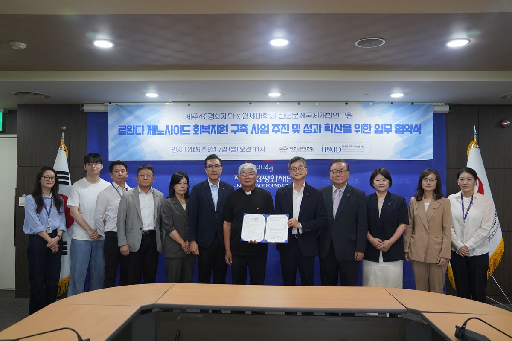
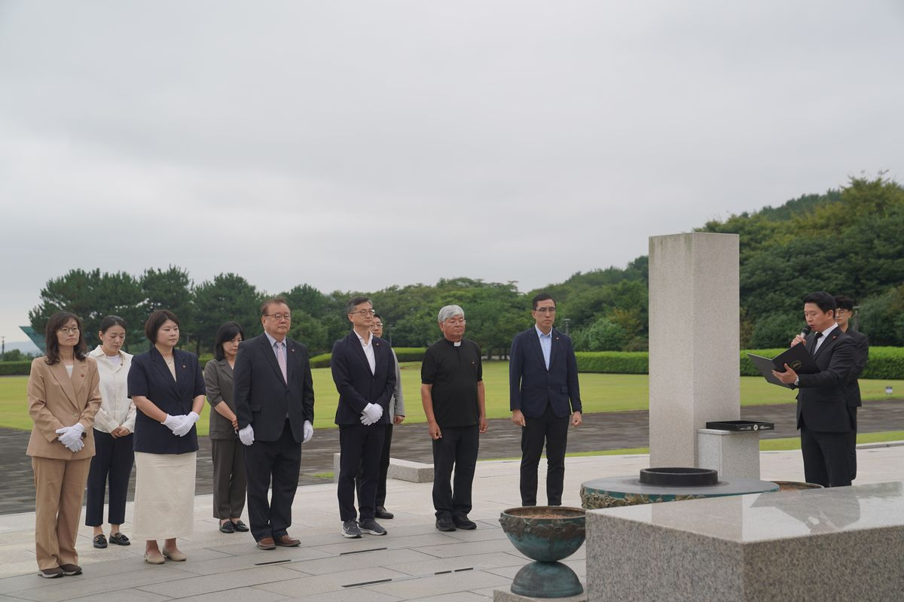

제주와 르완다, 회복을 함께 설계한다는 것
제주4·3평화재단 × 연세대학교 IPAID 업무협약을 기획하며

- 일시2026년 9월 7일 오전 11시, 제주4·3평화재단
- 주체제주4·3평화재단 × 연세대학교 빈곤문제국제개발연구원(IPAID)
- 내용르완다 제노사이드 회복지원 구축 사업 추진 및 성과 확산을 위한 업무협약
- 역할협약 기획
제주와 르완다를 잇는다는 것
협약의 이름은 「르완다 제노사이드 회복지원 구축 사업 추진 및 성과 확산을 위한 업무협약」입니다. 제주4·3평화재단과 연세대학교 빈곤문제국제개발연구원이 함께 르완다의 회복지원 사업을 만들고, 그 성과를 넓히기로 했습니다.
개발협력을 하는 대학 연구원이 지역의 과거사 재단과 무엇을 하느냐는 질문을 여러 번 받았습니다. 답은 회복입니다. 집단학살을 겪은 사회가 이후를 어떻게 살아가는가는 르완다만의 문제도, 제주만의 문제도 아닙니다. 진상규명과 배·보상, 기록과 추념, 유족의 생계와 다음 세대의 교육까지 제주가 70여 년에 걸쳐 밟아 온 경로는 국제 무대에서 설명할 수 있는 몇 안 되는 사례입니다. 그것을 자산으로 삼자는 것이 이 협약의 출발점입니다.

협약이 정한 것과 정하지 않은 것
정한 것은 방향과 짝입니다. 평화를 매개로 양측이 국제 협력을 함께 하고, 르완다 회복지원 사업을 공동으로 추진한다는 것입니다. 정하지 않은 것은 설계입니다. 어떤 형식으로, 누구를 대상으로, 무엇을 성과로 볼 것인지는 이제부터 만들어야 합니다.
조심해야 할 것
지역의 비극을 국제 의제로 옮길 때는 두 가지 위험이 따릅니다. 하나는 피해자의 경험이 설명의 재료로만 쓰이는 것이고, 다른 하나는 '우리도 겪었다'는 말이 상대의 고통을 이해했다는 증명으로 앞질러 쓰이는 것입니다. 제주가 르완다에 무엇을 가르치는 구도가 되는 순간 이 협력은 실패합니다.
위험을 줄이는 방법은 형식에 있다고 봅니다. 한쪽이 설명하고 한쪽이 듣는 구조가 아니라 양쪽이 각자의 질문을 가지고 들어오는 구조, 그리고 교류의 결과를 유족과 지역사회가 확인할 수 있는 구조입니다. 성과관리를 하는 사람으로서 제가 붙들고 싶은 지점도 여기입니다. 참가자 만족도가 아니라 양쪽 지역에 무엇이 남았는지를 확인하는 설계 말입니다.
개인적인 기록
저는 2000년대 초 제주MBC에서 구성작가로 일하며 4·3 다큐멘터리 제작에 참여했습니다. 그때는 이 일을 기록의 문제로 보았고, 지금은 제도와 성과의 문제로 봅니다. 같은 주제로 20여 년 만에 돌아왔는데, 돌아와 보니 물음이 달라져 있었습니다. 그때는 어떻게 남길 것인가를 물었고 지금은 남긴 것으로 무엇을 할 것인가를 묻습니다.